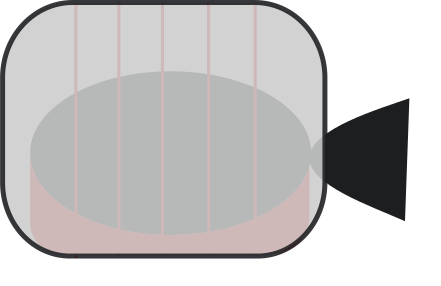
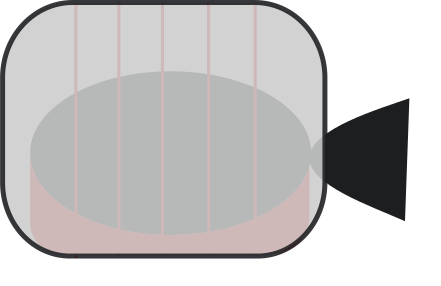

Sleeping pillow
There are description about my project

Sleeping pillow
I want to create it for using this in bed capsule that I wish used in my projects.
I need to create perfect capsule of full deprivation. I think that some digital with technologies may do our sleep better and smarter. May be from statistic and light control, may be from forms and place of head&body.
There are a lot of useful functions also that I want to use. There are time spending to sleep, it will be light-alarm, that will be better than some kind of loud sound.
I want to create it firstly for me and my future works for the sleep capsule. There are a lot more functions that really good in using, I think that we need to have control during sleep and this makes us better anyway.
My predictions to create 1 working prototype and make technical plan cost from 10 000 – 150 000 $
It will be not a hard work but there are need team from 10 qualified humans. I know what we need to do and create. So I want to make it from zero and there are many problems in neuron system and if we want to create perfect mechanism and programs. It will cost more than 1 000 000 $.
Time spending for creating prototype may be from 10 – 36 weeks. Of course, it is only for first prototype and available working technique.
In result for creating first stage it needs 9 700 – 220 500 $. Work weeks from 9 – 52 weeks.
Our sleep is the best analysis and restoration.
There are description about my project